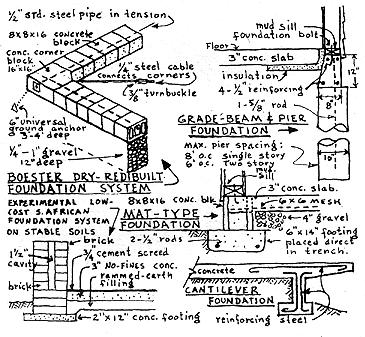
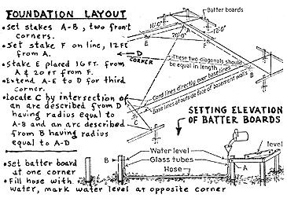
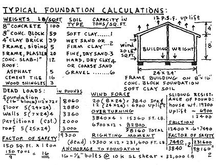
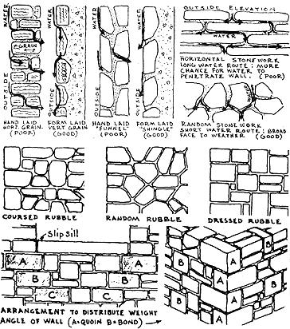
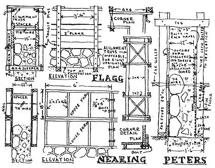
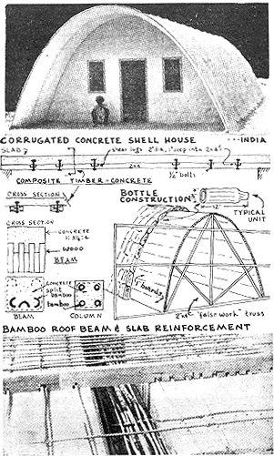

Ken Kern, author of The Owner-Built Home and The Owner-Built Homestead, is an amazing fellow, and everyone interested in decentralist, back-to-the-land, rational living should know of his work. Back in 1948 he began collecting information on low-cost, simple and natural construction materials and techniques. He combed the world for ideas, tried them and started writing about his experiments.
Eventually, Mildred Loomis started publishing Kern's articles in The Interpreter, Way Out and Green Revolution. Ken has also issued a three year series of pieces (called "Technic") on his own, and a greenhouse-sun pit design of his has been featured in Organic Gardening.
This series of Ken Kern's work is being taken both from The Owner-Built Home (already published) and The Owner-Built Homestead (to be published). To give you advance chapters of Homestead as they are written I have to break my presentation of Home on an irregular basis, for which I apologize.
-MOTHER
The form of a building should depend on the function (or use) to which the building and site are to be put. Actually, a person may rent or buy an available house if he can afford it, and then cut and cramp his activities to fit the conventional form of a structure built to sell at a profit. Architecturally speaking, however, we dream first of the kind of life we would live in the foreseeable future, and then design an adaptable or expandable dwelling to fit our dreams.
Present-day architects, for the most part, seem to think that the homeowner lives only to manipulate modern gadgets. So the slogan is, "Design for Equipment." But architects like Richard Neutra react against this technological trend in house building; they claim that design fundamentals should be based on biological rather than technological needs. We should, they assert, design specifically for the human senses; the architect should become a "manipulator of stimuli." It is further argued that the increase in mental disorders makes more urgent the need for design to have a biological basis. Neutra states that each new technological invention results in urgent new demands on the nervous system.
"Design for Equipment" is an appalling concept. But the concern of having to pay on the mortgage of an elaborate sense-attuned Neutra house would depress me as much as would a house designed around gadgetry. In place of either of these "ideals," I would prefer to have a few inconveniences and strained senses in a house that was paid for and built with my own hands-a house planned to suit the site and my family's personal requirements.
Design-wise, an owner-builder is in an enviable position as the one best able to satisfy his own biological space needs. The conflicting design theories of Neutra, Wright and Corbusier can be thrown to the wind when one begins mixing concrete and nailing boards. The owner-builder need only determine the true function of each building component-be it foundation, floor, wall or roof-and relate it to site conditions. Design or form will then take care of itself ("form follows function").
The purposes satisfied by the final form of the building will suggest the material to be used and the method of building construction. In regard to foundation, we need some awareness of soil properties in relation to building (weight, site drainage, freezing conditions, etc.). When due consideration is not given to the functional aspects of the foundation, one may suffer either extravagant waste or structural failure.
On the one hand, one naturally reacts with horror at newspaper accounts telling of homes destroyed as a result of faulty materials or careless construction. It is not uncommon for foundations to settle, break away or slide during heavy rains when built on uncompacted fill. Mickey Mouse plumbing or electrical installations can also threaten the safety and health of occupants, as well as the building itself.
It is also shocking, however, to see tons and tons of unnecessary material go into a house. This material, and the labor required to place it, introduces long years of mortgage slavery. Who is to say which brings the greater personal hardship, the few jerry-built homes which may eventually end up in the bottom of some ravine or the many code-enforced, overbuilt structures that become 30-year millstones around the necks of unwary home owners?
The foundation of a house can be an unnatural depository for tons of unnecessary concrete. Instead of fundamental formulas and common sense designing in a foundation, it is usually a haphazard, rule of thumb, local and code-dictated practice that sets the pattern.
When the true function of a foundation is understood, its design in relation to soil conditions and climactic factors will, in turn, influence the form of the superstructure to be supported. A building foundation consists of two parts; foundation-footing and foundation-wall. The footing is a basic supporting element upon which the total weight of a building is distributed via columns or foundation-walls.
One of the foremost problems associated with footing design is determining the bearing capacity of the soil. For hardpan or very firm, welldrained soil, there should be not more than four tons of building weight for every square foot of footing area; for wet sand or firm clay, two tons; for soft clay or loam, not over one ton.
Frost line and ground water factors are two other items which determine the design and material chosen for foundation construction. The frost line along the northern belt of the United States varies from 4 to 6 feet in depth, and in most areas of the central United States it averages from 2 to 4 feet. Foundation walls must extend below these depths if danger of freezing is to be avoided (alternate expansion and contraction of the earth during freezing and thawing may heave the footing and damage the foundation-wall and superstructure). An alternative solution is to use a rock ballast similar to railroad beds under the foundation and floor, thereby insuring maximum drainage. Gravel filled trenches under the footing have also been successfully used for ground water drainage (a gravel bed will support 6 tons of building weight per square foot).
Where basements are included in the building design, all sorts of complex foundation problems arise. High water table, moisture from rain and snow, and underground springs all contribute to the nuisance value of basements in general. Basically the problem is that water seeks its own level, and one must either drain it off (seldom possible on the average basement site) or build a swimming pool in reverse.
The additional cost of a basement in a one-story house of average size is $1200 or more, depending upon excavation expenses. At least 10% more living space above grade can be had for the same money. Basementless houses appeal to our younger, low-cost oriented generation because of the smaller initial investment required. Older people, for whom stair climbing requires extra effort and hazard, also react favorably to homes without basements.
Soil conditions, frost line and ground water are the main factors which influence footing design, but, in addition, the site contour and the distribution of building weight must be considered. To assist the ownerbuilder in his choice of foundation, various types of footing are outlined below.
A stone-filled foundation trench, extending below the frost line, was suggested by Frank Lloyd Wright in his book The Natural House. Actually, this method was used a century ago by masonry wall builders in the northeast. Stone ballast (as previously mentioned, similar to that used on railroad beds) has also been successfully used for masonry wall support in areas of deep frost penetration. It will support exceptionally high bearing weight and at the same time give sufficient drainage to prevent frost heaving.
Another variation of the stone ballast idea comes from Carl Boester, Lafayette, Ind. Boester developed a mortarless concrete block foundation system, supported on a gavel fill. Steel rods and metal corner anchors permit an entirely dry assembly, built without water, concrete, mortar, or the need of electric power. Half-inch steel pipes are simply placed through the center core of standard concrete blocks and tightened at each corner (post tensioned) and, in addition, one-fourth inch steel cable made taut at corner diagonals.
For those who may consider Boester's foundation system a bit too "fussy" and involved, I can recommend from experience an alternate method; the concrete block and mortar method. Trough or lintel bond blocks are laid directly on a concrete footing. With a mat-type footing, where the floor is reinforced by wire mesh to act as a unit in distributing building loads over the entire surface, the inside wall of the lintel block is broken out to receive a continuous pour of concrete. Thus the block doubles as screed runner and form for the poured floor and the mat acts as both foundation and footing. Mat footings are generally used in areas where there is little to no freezing; in other areas, mat footings can be designed to bear directly on concrete piers sunk below the frost line.
The use of concrete piers also goes with "grade-beam foundation," which is fairly new and known to have many economic advantages over the traditional "continuous-footing" type. According to foundation cost comparisons made at Pennsylvania State University, a continuous-footing foundation, using concrete block or poured concrete walls, will cost about 25% more than a slab-on-ground floor built with a grade-beam and pier foundation (a saving in cost by grade-beam is especially apparent in homes built in northern climates).
The first step in building a grade-beam foundation is to dig pier holes, 6 to 8 feet apart, along the perimeter of the house. The holes should be dug below the frost line, with bottoms in good load bearing soil. Concrete piers are made, 10-12 inches in diameter with a 5/8-inch reinforcing rod that protrudes 11 inches from the top of a pier into the space for the poured concrete grade-beams. The strength of a grade-beam depends upon well-placed reinforcing rods, and two 1/2-inch rods should be placed at the top edge and bottom edge of a beam. Though poured on the ground between forms, a rigid beam is really supported by the piers.
Some simple construction practices can be used in laying out any type of foundation. By erecting "batter boards," building corners and edges and floor levels can be preserved during excavation. Floor levels are set on the batter boards by the use of a garden hose filled with water (the water level establishes equal elevation). The "square of the hypotenuse theorem" provides a simple test for determining exactly square angles in the foundation (lay off 16 feet along the cord on one side of the stake, 12 feet along the other cord, and the line connecting the two markers is the hypotenuse of a right triangle and should be 20 feet.)
At times special ingenuity is required to solve foundation problems on unusual sites. For instance, in areas where only muck or silt exists as bearing soil, a "raft" type of footing becomes necessary. In this case the entire building is supported on a concrete "raft" floating on the wet soil. The building is designed so its load equals the displacement of muck.
Hillside sites always require special attention to the footing and foundation system (concrete retaining walls may be needed). A cantilever foundation is often used to advantage on hillsides. Wright called the cantilever "the most romantic, most free, of all principles of construction," and he used the cantilever in most of his famous buildings, including the Imperial Hotel in Tokyo, Japan, and the Johnson Wax Company building (tower). The tower has been likened to a tree form: In structural terms, a tree is a vertical beam cantilevered out of the ground. It maintains stability against wind pressure and snow load by means of restraints applied to its roots by the earth; there is a subtle balance of forces between the bearing earth and the tree. As with Wright's tower, a central, vertical, foundation core can function as the only structural support.
It is the problem site that best challenges the working belief that form and function are one. In any building circumstance where this notion is operative the foundation must necessarily act as a downward thrust of roof-wall and not as a separate and independent "pad" upon which the house is set. The concept of a building having a "tap root" foundation and "growing" from its site is not a simple idea to grasp. It took a master builder like Wright to capture this organic architectural theme.
BIBLIOGRAPHY (books listed in order of importance)
Foundations for Small Houses in Oklahoma. Means & Parcher, Eng. Exp. Station Bulletin 99, 1958.
Grade-Beam and Pier Foundations. University of Pennsylvania.
Building Construction Handbook. Merritt.
For purposes of discussion it's possible to classify building materials into three general groups, depending upon the degree to which the new material is modified; synthetic materials, like plastics and paper-core panels, are greatly modified; manufactured materials, like plywood and concrete, are modified to a lesser extent; natural materials, like stone, earth and timber, are but slightly modified.
Obviously, the less processing required of a material, the less it will cost in the finished wall. Modern building technology has produced some truly remarkable wall materials, but without exception the saving made in added insulation, speed of erection, durability of finish, etc., is more than used up by the higher cost of the material itself. And inasmuch as the average owner-builder has a labor resource far in excess of his money resource, it behooves us to consider in great detail the unprocessed building materials.
Next to earth, stone is the most "natural" of all native materials. It is reasonable to suppose that in areas where this material existed, man's earliest houses resembled mere piles of stone. Then somewhat later he probably found that the drudgery of handling so much stone could be eliminated by laying one stone on another. We know to this day that the strength of a stone "dry wall" depends entirely upon the firmness of "seat," the fit of one stone on top of another. Then the discovery of natural cements made it possible to build "wet walls," walls that can be at once thinner, higher and stronger.
It is a mistake to attempt a minute analysis of the advantages and disadvantages of stone masonry construction (for all the advantages of any material, one can find disadvantages). A stone wall is relatively fireproof, but requires some form of waterproofing; a stone wall is strong and has a long life, but the strength depends entirely upon workmanship and varies with mortar proportions; a stone wall requires little maintenance, but there is a high initial labor cost for construction; the comparatively small size of stones aids in handling, but the wall itself has great weight; a stone wall is relatively soundproof, but additional insulation against heat transmission is required; a stone wall can be built to hold heavy roof loads, but the wall can scarcely resist bending or tensile forces.
If you respond to a challenging material, and if you want a wall that is unique and beautiful, with great potential for individual expression, and if stone for this wall is locally available at little cost above hauling, then you might well consider stone masonry. My experience in this field started with brief apprenticeships to professional rock masons, and continues to this day with the construction of fireplaces and walls of various patterns and shapes. I have had to find out first hand how much skill and expense are required to lay a square yard of cut stone with line and level, and how little it takes to build a rubble wall with a movable form. I also discovered that there are certain characteristics of stones that should become basic knowledge to anyone using stone for building. Oftentimes more skill can be exercised at the rock quarry, in selecting the right stone, than in the actual placing of the stone in the wall.
One of the very few men whom I have known to really love his work happens to be the stone mason with whom I am currently working. He finds joy in his work through respect for his few but high quality tools, through an appreciation of his hard-earned skills, and through a deep understanding of his materials. As we load each stone onto the truck at the quarry, he clearly foresees its proper and final resting place. An unappealing specimen, with rounded edges, awkward form and an uninteresting face is abruptly cast aside with a few underbreath epithets. But pure elation follows his discovery of a colorful, square-edged corner stone. From this quarry experience, I learned that more time can be saved and a better wall can be built when special pains are taken to collect only the "most fittin' " stones available.
Local stone quarries frequently sell unmarketable "rubble" at a low price. Abandoned mining operations often leave piles of satisfactory building stone. Then too, deposits of field stone and boulders can be found along streams or in the open fields. Stratified rocks, like limestone, can be worked up into practical sizes with hammer and wedges. Blasting can also be a very economical means of obtaining building stone.
Stone has much the same physical characteristics as wood. Masons talk of the "sap" in freshly quarried stone; after exposure for some time this sap crystallizes and the stone becomes harder and thus better able to resist weathering elements. The "grain" direction of a stone is an important thing to ascertain when building an exposed wall. Limestone, shale and sandstone have stratified grain, a property which makes them easy to split and chip, but in winter they absorb moisture and split when it turns to ice during a freezing spell. Usually the grain runs lengthwise. In most handlaid work one's first tendency is to place the stone with the grain horizontal and running from the outer surface toward the inside wall. But then capillary attraction draws water to the inside wall via natural splits and seams in the grain, as well as between stone and mortar. A few coatings of masonry sealer will help this problem, but the best practice is to place the stone on its splitting surface, with the grain vertical.
"Rubble" is the term usually applied to stone not machine cut or dressed. When such rough stones are built in courses with level beds, the wall is called coursed rubble. When the stones are of varying sizes and shapes, and laid without regard to the direction of the joints, the wall is known as random rubble. Sometimes the stones are roughly squared and faced and laid on level beds to form more or less continuous courses, and such a wall is known as dressed rubble. Whichever pattern is used, the finished wall should appear to be a unit rather than a conglomeration of rocks. The amateur stone mason frequently creates his "monsterpiece" by failing to observe a few common-sense design practices. First of all, rock shapes, colors and textures should be matched, allowing only enough variety for interest. In general, the larger stones should be placed in the lower courses, with small stones in the upper. Stones of the same size or shape should never be set side by side. The first layer of stones should be embedded a few inches into the wet foundations.
The ultimate strength of a rubble wall depends as much upon the manner in which it is bonded or tied together as it does upon the quality of stone and mortar. At about every 5 feet in each course a "bond" stone long enough to extend through the wall should be placed. It is important also that successive courses break joints (vertical joints should never occur over those of the lower course). The same is true of horizontal joints (besides the importance of keeping horizontal joints as near level as possible). A good stone mason never sacrifices strength, as he might if thin stones were set on edge and then backed with loose fill. With a minimum 12-inch thick wall, stones should extend at least 4 inches into the wall. Stones just below an opening should be laid so as to spread the weight carried by the wall on either side of it.
Due to the irregular size of the mortar joints and the numerous voids that have to be filled in, a stone wall may contain as much as a third of its volume in mortar. Cement mortar for laying rubble stone should combine, in volume proportions, 1 part cement, 3 parts sand and 1/2 part fire clay. Hydrated lime is often used in place of fire clay, with more tendency to discolor the stones. Locally obtainable pit or bank sand is generally considered best for mortar, though river bed sand that is free from loam and vegetable matter also can be used successfully. For rough work, a combination of coarse and fine sand makes the strongest mortar. It is a good practice to moisten all stones prior to laying them in the wall, and for several days afterward.
The main element in any type of hand-laid stone masonry is simply time. Under average conditions a mason and his helper can place about 2 tons or 60 cubic feet of wall in one day. Including cost of labor and materials, the contract price for stone work starts at $2 a cubic foot. Consequently, our patent office contains hundreds of applications which purport to reduce this costly time element.
In 1920 a New York architect, Ernest Flagg, developed the first truly successful labor-saving device for the construction of rock walls. His "mosaic rubble" system of forming walls has the advantage of being totally integral, as no external bracing is required. The form is attached to and rests on 4 X 4 sleepers, which are embedded four feet apart in the concrete foundation wall while it is being poured. Then, on each end of the 2-foot-long sleepers, a 4 X 4 upright is fastened, the length equal to the desired wall height. A movable 12-foot-long aligmnent truss is employed at the upper limits of these vertical uprights. Between the foundation sleepers and the alignment truss, the rock wall is laid. Movable 2 X 6 or 2 X 8 planks rest against the inner sides of the uprights. When one layer of the rock and concrete reaches its initial set, these planks slide upward and are held in place by toggle pins. In practice the rock is merely set against the outside plank and the rest of the space poured with a weak concrete mixture (1 cement, 5 sand, 10 gravel). When the forms are removed, the outside wall may be pointed (cement mortar trowled in between the rock joints) or left untreated, as desired.
Following Flagg's original scheme, another Eastern architect, Frazier Peters, built a number of mosaic rubble houses. Later he devised his own personal brand of wall forming, which involves erecting a complete wooden shell on all four walls and placing the rock and mortar against this. Peter's system appears unnecessarily involved, although he patented a few rockwall building ideas which are well worth consideration.
About 25 years ago Helen and Scott Nearing started to build rock structures on their Vermont homestead. The program was ambitious, and so they naturally considered in great detail many of the different forming methods suitable to amateur-type owner construction. An adaptation of Flagg's mosaic rubble form was employed by them in the construction of nine rock buildings. First they assembled a large quantity of 18-inch-high plywood forms of varying lengths. When set in position on a wall, each pair of forms was tied together with wires, a procedure suggested by Flagg. After a first set of forms was filled with rock and concrete (using a proportion of 1 cement, 3 sand, 6 gravel), a second set of forms was placed on top and also filled. When the concrete in the upper form reached initial set, the wires in the lower form were cut and that form placed on top of the upper one, and tied with new wires. This climbing form method of rockwall construction proved to be an ingenious improvement in many respects over Flagg's plank-and-stud system.
Movable wall-building machines, like the Magdiel form, can be used successfully for building rubble walls. Labor costs can be halved, and amateur masons can produce walls of a professional standard with the help of this simple mechanism. Another type of movable form can be made out of sheathing, braced from the inside. This panel should be large enough to take care of all the stone that can be laid in one day's work. In the morning, after the wall from the previous day's work has set, the form is moved to a new position and the rock-laying continued. As the rock-laying is done from the outside, the inside form can be braced to the floor or to window and door frames.
Various methods for insulating stone walls have been tried out. The standard practice for insulating masonry walls involves the use of "furring strips" set in the masonry vertically. These serve as light nailers for a second row of nailer strips on which insulation board is secured. The embedded strips are apt to dry-rot with age, and unless a great deal of patience is exercised in keeping the strips straight and true, the wall is certain to be uneven. I read somewhere of one mason who built a dead air insulation space into his stone walls by laying rolls of chicken wire, wrapped with burlap, at close intervals in the masonry. This method sounds much more practical so long as wall strength is not thereby appreciably reduced.
I am personally partial to any type of construction simple enough to be understood and implemented by anyone having average intelligence and ability. The complicated technique of masonry seems to require a few basic aids before the average man can master it. Flagg, Peters, Nearing and Magdiel all suggest methods that reduce the need for high level masonry skills. All these systems work well and all contribute greatly to the advancement of owner-builder construction.
BIBLIOGRAPHY (books listed in order of importance)
Pour Yourself A House. Frazier Peters, 1949. Low cost building with concrete and stone.
Houses of Stone. Frazier Peters.
Small Houses. Ernest Flagg, 1921
Living The Good Life. Scott and Helen Nearing.
Building Construction and Superintendence, Part 1, "Masonry Work." F.E. Kidder.
Handbook of Building Construction. Hool and Johnson.
"Farm Building Section." Rubble Masonry: Information Series No. 54. U. S. Dept. of Agriculture
In previous chapters of this volume I have attempted an exploration of building material possibilities. Some superior, and less expensive, methods and materials have been suggested. I have tried to emphasize the fact that present-day building practices have failed to provide for the low-cost housing needs of the majority of homebuilders. Practically none of the commercially available building materials are adaptable to a truly low price range. Furthermore, if an owner-builder expects consistently high-quality yet economical building results, he must be sufficiently aware of existing house-building alternatives to consider completely new forms, unorthodox methods of construction, and materials almost unheard of.
No attempt will be made here to list all "unheard-of" or unconventional building materials used by man. But the principle behind the utilization of waste and readily available materials will be expounded, the principle of compositing materials (synthesizing their qualities of insulation, structure, workability, low cost, etc.). It is this principle, and not the particular formulas, that must be understood by the owner-builder.
The term "composite" has been chosen here to categorize the wide variety of building products made up of two or more materials. For the most part, either common cement or emulsified asphalt is used as a structural base, weatherproofing element or binding agent. A "filler" element is used to provide body and insulation.
Practically any readily available waste material can be simply processed for composite padding to serve as a composite filler, or aggregate. For example, in the Midwest section of our country, ground-up corn cobs have been successfully used as a filler for concrete; in the South, rice hulls have proved advantageous as a concrete filler; in the Northwest, sawdust has long been used as a concrete aggregate. The use of these and other materials will be discussed below, in demonstrating the practical value of composite construction practices.
"Cobcrete" samples made and tested at a Michigan agricultural college were found to have a relatively low thermal conductivity (3.0 k) and a sufficient compressive strength for average building requirements (1000 lbs. p.s.i., where 600 lbs. p.s.i. is the generally required minimum). Either cast-in-place or pre-cast blocks of this stuff can be fabricated. Fresh, dry cobs are first ground into pellet form by a farm hammer mill. After screening to the desired range of 1/8 to 1/4 inch, the cob-pellets are placed in burlap bags and soaked in water for at least 6 hours. Following a 4 hour draining period, Cobcrete is made by a mixture (in these proportions) of 1 cement, 2 sand, 3 cob-pellets, and 1/4 lime.
A cement and rice hull block house (the first in this country) built in 1923, at Payne, La., still stands in excellent condition. Experiments at Louisiana State University have proved that rice hulls have sufficient strength in compression and tension to meet ordinary structural requirements. Furthermore, cement and rice hull blocks have high insulating properties (being lightweight) and good weathering qualities, so that expansion and contraction of exposed blocks do not cause excessive cracking. A proportion of 1 cement, 4 rice hull ash, and 2 rice hulls was first used to make up these blocks, but later (in 1953) it was found that the addition of clay gave still better results, and then, instead of cement, emulsified asphalt was used as a waterproofing agent in a soil and rice ash mixture. The proportion used was 1 cu. ft. of soil (containing not more than 85% clay, nor less than 40%), 1 cu. ft. of rice hull ash, 3/4 gal. emulsified asphalt, and 2-1/2 gal. water. One-half of the total water and the total emulsified asphalt required is first placed in a mixer and allowed to mix for 3 minutes. The soil is then added, followed by the rice hull ash and the remaining water. The average density of this composite is 70 lbs. per cu. ft . which compares very favorably with adobe (100-120 lbs. per cu. ft.) and concrete (115-150 lbs. per cu. ft.)
Research in the use of a sawdust-cement composite for building construction started in 1930 at Oregon State College. It was found that the admixture of 1% diatomaceous earth resulted in a far superior product. Like the cob-pellets in Coberete, sawdust should be previously soaked. A proportion of 1 cement, 1 sand, 3 sawdust and 1/2 clay or lime has proven satisfactory for either block or poured-in-place walls.
An interesting use of sawdust as an aggregate was developed not long ago by Carl Fabritz, in Germany. He uses a formula (full details available from me upon request) that gives a product with a lightweight-granular composition, using readily accessible raw materials. A proportion of sawdust and cement is first mixed, and to this is added a froth-forming agent (soapy water), with a small proportion of waterglass before agitation. Although somewhat involved, a multicellular composition is produced as follows. Moisture is withdrawn from the mixture by the frothing action; in fact, so much is withdrawn that the walls of the froth globules are not supported by the binder (cement). As a result, the binder coats the grains of sawdust. The waterglass functions to support the froth globule walls, holding the grains in suspension until all moisture is evaporated. When evaporation is complete the binder sets, and the froth globules gradually burst. The result is a low cost, lightweight, strong and well-insulating composite product.
Fabritz's technique for producing a lightweight concrete product is but one of a number of air-entraining developments of the past forty years. Air-entraining was first employed to improve the resistance of concrete to weathering, especially to freezing and thawing conditions. The cellular composition of air-entrained concrete creates a greater resistance to the passage of capillary water. The minute air bubbles act as a sponge, providing spaces where the factors that generally cause concrete disintegration can be dissipated. Air-entrained concrete is not significantly lower in strength, less water and cement are needed, and the workability is improved. The major advantage of air-entrained concrete, however, is that it is lightweight, and has a corresponding high insulation value.
Some air-entraining agents require special mixers, as, for instance the English "Aerocem" and John Rice's "Bubblestone." The Rice apparatus for making a cellular concrete product was first patented in 1937. It consists of a series of perforated cylinders, one within another, which revolve about a horizontal axis inside a cylindrical tank. As the perforated inner cylinders revolve, air is introduced directly into the slurry, and this air is "trapped" by a froth composition of phenols and aldehydes dissolved in water. Vinsol resin is another commonly used air-entraining agent.
A somewhat less involved procedure for achieving cellular concrete is to mix a suitable lightweight aggregate directly into a mixture. There are a number of such aggregates on the market, and natural deposits can be found. Several years ago a Texan built a complete house-walls, roof, and floor-with diatomaceous earth as the sole aggregate (diatomaceous earth is formed from the decayed skeletons of tiny marine life, and deposits are scattered over wide sections of this country). In 1952 an experimental building using this aggregate was built at the University of Idaho. The 24 by 48 structure cost $2.85 a square foot (as contrasted with estimates of $5 to $8 a square foot using conventional materials). Proportions were 1 cement, 1 1/2 diatomaceous earth, and 6 to 8 parts wood shavings from a planer mill.
In the Eastern part of the country, expanded slag is available for lightweight concrete aggregate, as well as vermiculite. In the West, pumice is perhaps the most popular and least expensive of all lightweight aggregates. Scoria and perlite, also of volcanic glass composition, are readily available. One major advantage of a lightweight aggregate is in the reduction of structural weight (its use may reduce the dead load of concrete itself by more than one-third). Also, the thermal (as previously stated) and acoustical insulation values of lightweight aggregate are many times greater than those of standard concrete.
Reference was made in a previous chapter to the poured stone rubble technique developed by architect Ernest Flagg. Another contribution made by Flagg to owner-builder housing was a way of building non-bearing partition walls out of wire lath and plaster. His system is most interesting. Two plasterers, one on each side of a single layer of wire lath stretched from floor to ceiling, trowel against each other. After the first coat, the wall is sufficiently strong for a finish layer to be applied without back support. The actual strength of reinforced plaster is astonishingly high (it is not unusual to find a plastered wall holding up a roof after the rest of the wall has been destroyed by fire).
Actually in 1930, Major deW. Walker (of Ireland) found that plastered fiberconcrete will support 600 lbs. per square foot. On this basis, he developed a new method of strengthening concrete, called "No Fango." The process is simple. Fiber reinforcement is spread lightly over a framework of wood, reinforced concrete or steel, and the material is then allowed to shrink. While in this stage it is thoroughly impregnated with common cement; and concrete is then applied in the form of plaster. The finished wall is one-inch thick; for outside walls an air space is provided between two one-inch layers.
This same idea of "starched concrete" inspired some experiments by Bernard Maybeck, renowned San Francisco architect, in building his own home. A framework was set up and wires were stretched around it 18 inches apart. Burlap sacks were soaked in a mixture of portland cement and powdered lightweight aggregate, made very thin with water. The bags were then hung on the wires like clothes on a line, and a sturdy, low cost, fireproof wall resulted.
Obviously, the very nature of fiber-concrete construction demands equally unique structural form and design practices. In the early 1950's, Dr. Kurt Billig (the very able director of building research, Central Building Research Institute, New Delhi, India) evolved a totally new building form using starched concrete. A house he displayed at the 1954 International Exhibition on Low Cost Housing (New Delhi) was a simple corrugated shell. Here, for the first time, a house was developed for that 90% of the population of India that cannot afford to pay for even a minimum-priced conventional structure. The CBRI shell house contained one-sixth the volume of building materials that would have been required for a conventional brick house of the same floor area, and also cost about one-sixth as much to build (where 313 man-days would be required to build the conventional brick house, only 118 were required on the corrugated shell house.)
The first step in erecting a corrugated shell structure is to install the "falsework." This usually consists of tubular steel or wood-truss ribs, placed on 3-foot to 8-foot spans (depending upon the span of the arch). This formwork can be kept very light. Between each rib a vegetable fabric is laid, such as hessian, jute, coir, sisal or burlap (it was found that, whether stresses are due to static, dynamic or thermal loads, vegetable fabric has the remarkable property of resisting high tensile stresses in all directions).
Dr. Billig says:
". . . the dry hessian is stretched by hand as tightly as possible over the rigid falsework and securely fastened to it. By shrinking the fabric with water the fibres are stretched still tighter, and in this state they are covered with a cement slurry by a brush. The cement is carried into the pores of the material where it remains. It maintains the shrinkage of the material, and the initial tension is maintained as a permanent tension in the jute after the concrete has set and hardened."
Absolutely no metal reinforcement need be used in corrugated concrete shell roofs, foundations, or floors. The shell is less than 2 inches thick, with spans up to 60 feet. A day after the last plaster coat is applied the falsework can be removed, and the structure will then withstand 85 miles per hour winds.
In excessively hot or cold regions it may be desirable to build doubleskin shells. This simply involves placing another layer of fabric over mortar fillets (or over a layer of bricks), and then plastering as before. This cavity air space improves the insulating qualities considerably (U factor, 0.37). In the tropics it was noted that as the air of the inter-shell cavity became warmed from the day's heat outside, it rose along the intrados of the arch, collected more heat from the upper regions of the shell, and then escaped through vents placed along the crown. The result was an effective natural ventilation system as well as efficient heat insulation.
Like Billig of India, Jack Bays of Cedaredge, Colo., is an old-timer in the low-cost composite building field. For 25 years he has directed an experimental housing laboratory in Oklahoma City. His many building material formulas are interesting-and in some cases valuable-but hardly worth his expensive "schooling" program required to come by them.
Bays' material consists of 12 quarts of asphalt emulsion, 8 lbs. of paper and cardboard run through a farm hammer mill, and 12 gal. of clay and water mixed in equal parts. The finished product, called "Rub-R-Slate" can be troweled or sprayed on walls or floors. His favorite RRS construction method consists of wall studs spaced on 30-inch centers, chicken wire spread inside and out and tacked to the studs, the inside stuffed with straw to form a base for the RRS and to act as deadair insulation, and then RRS solution plastered on both inside and outside walls.
A two-bedroom home in Oklahoma was recently built for $1200 with Bays' materials. The walls consisted of used quart oil cans, braced by horizontal wires spaced every two feet around corner angle-irons and braced up with a mortar of clayey sand, asphalt emulsion and water. The RRS coating was applied both inside and outside.
The utilization of waste iron and tin cans for concrete reinforcement dates back at least to 1927, when George Watson of England developed and patented a process of flattening and shredding waste iron. To the budgeted owner-builder every city dump or local junk yard can be a source of concrete reinforcement (bed frames, iron pipe, wire fencing, wire cable, etc., as well as the ubiquitous tin can).
When integral reinforcing is used in cement materials, even if it is nothing more than shredded tin, much greater stresses can be withstood. Expensive iron rods are not always necessary; in some countries the absence of iron, or perhaps a scarcity caused by war demands, or a desire to use available natural materials, suggests that the possibility of using satisfactory substitutes for commercial iron rods should be explored.
One of the first to experiment with the use of wood for concrete reinforcement was H. K. Chow, a Chinese student at the Massachusetts Institute of Technology, in 1914. In Nanking, China, a few years later, a stretch of highway was laid down with bamboo as reinforcement. This successful experiment encouraged the Chinese to extend the uses of bamboo in concrete reinforcement.
Then in Italy, in 1935, as a result of iron shortages because of war preparation, a number of wood-reinforcement experiments were carried on and bamboo was found to be the most suitable. There is no chemical reaction between bamboo and cement mortar, the bond with concrete is much greater for bamboo than for any other wood, and bamboo has great tensile strength (about the same as concrete itself).
The Italian experiments showed that the modulus of elasticity in bamboo is about one-tenth that of steel; in other words, the cross section area of bamboo should be ten times that of steel to give the same results. Other researchers (notably those doing engineering research at Clemson, S. C.) point out that bamboo reinforcement increases the load-carrying capacity of a beam to four or five times that of an unreinforced member.
Even more significant than structural similarities is the cost differential between bamboo and steel. In tropical countries, bamboo cane will grow as much as three feet in one day, it grows without any special attention, and no particular problems complicate the harvest.
The Clemson research reports that greater loads are possible if the bamboo is unseasoned, split and treated with asphalt emulsion. (Ed. note: Asphalt emulsion is now available in low- or no-volatile organic compound versions.) Concrete has excellent compression resistance but its modulus of elasticity is negligible; bamboo can be economically substituted for steel to achieve this tensile strength.
In areas where bamboo is not available, timber can be employed to achieve similar results. Composite timber-concrete beams were built and tested in 1940 at the Talbot Laboratory, University of Illinois. The timber section was designed to withstand tensile forces and the concrete section to provide compressive rigidity. The Talbot investigators found that the major obstacle to such a structural system is the high horizontal shearing stress that exists at the junction between the two materials; some mechanical device is needed to key the two parts of a beam together. Of the wide variety of shear connections studied, it was found that triangular steel plate-units combined with iron spikes appeared to be most satisfactory in producing integral beam action.
Wood 2 by 4s can be used in reinforcing simple concrete slabs. Such a wood member, placed on the bottom side of a slab, in order to provide maximum tensile reinforcement, can double as a means of attaching ceiling insulation material, etc. It also replaces part of the form lumber.
Early Christians often employed effective building systems which have since been little used or understood. Around 300 A.D. the church of St. Vitale was built at Ravenna, Italy with a dome constructed entirely of hollow earthenware (the "urns" used were formed so that the end of one fits into the mouth of another).
This "pot" or "bottle" construction technique has truly become a lost art. Recently the French architect Jacques Couelle revived bottle construction. Couelle's three-layer bottle vault will span 49 feet without reinforcing steel, and 26 feet on a flat ceiling. The neck of one bottle receives the open end of another, with ordinary cement between. Longitudinal notches along the sides of each ceramic bottle make for rigid holding power; each bottle is entirely encased by a thin layer of cement.
Couelle reports a saving of 50% in cement over conventional concrete block construction, and a saving of 30% in weight over concrete building. M. Ros (Swiss Laboratory for the Testing of Materials) claims that the thermal insulation of ceramic bottle construction is increased 50% over average building practice.
Whatever materials are used for composite construction, a house-needy family might well begin its building project with the purchase of a drum of emulsified asphalt. As a builder, I would not begin a construction project without this material on hand. Aspahlt emulsion, of the slow breaking "stabilizer" type (Bitumil), is made by more than 30 companies and sold everywhere. It retails for 20 cents a gallon in barrel lots. As already pointed out, this versatile material will stabilize any number of filler compounds. It can also be used extensively as a wood preserver and for waterproofing.
BIBLIOGRAPHY (books listed in order of importance)
Corrugated Concrete Shell Roofs: Central Building Research Institute, Vol. 1, No. 3. New Delhi, India.
"Bamboo Reinforcement in Portland Cement Concrete." Experiment Station Bulletin No. 4. Clemson, S. C.
"Possible Uses for Waste Rice Hulls." Bulletin 507. Louisiana State University. Baton Rouge, La.
"Use of Corn Cobs as a Filler for Concrete." Michigan Quarterly Bulletin, Vol. 35, No. 1.
|
 |
 |
 |
|
 |
 |
 |